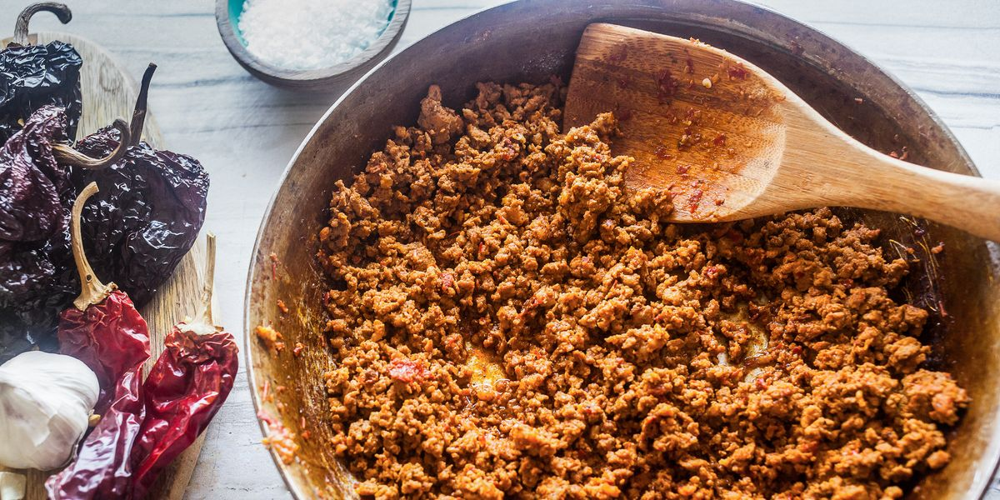
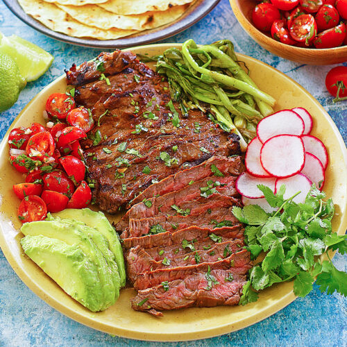

Chorizo

Description
Chorizo is a spanish sausage primarly of pork and is versatile! You can mix chorizo with eggs, cook chorizo on the grill and also
mix with beans as well
Ingridients
- Virgin Olive Oil
- Pepper and Paprika
- Tortillas
Steps
- You must cook the chorizo for about 10-15 minutes or until golden brown (Olive oil is optional when cooking small quantities of chorizo is cooked)
- Add paprika until your liking
- cook some corn tortillas and serve!
Asada

Description
Carne asada is a very tender cut of beef that is moutwatering when seasoned correctly!
ingridients
- 2-3 pounds of asada
- beer and adobo seasoning
- a charcoal grill
Steps
- You must marinade the asada with the beer and adobo seasoning
- prep your grill with charcoal for about 10 minutes
- lay your asada on the grill and serve when ready!